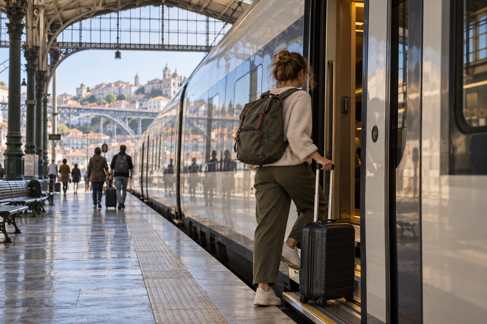
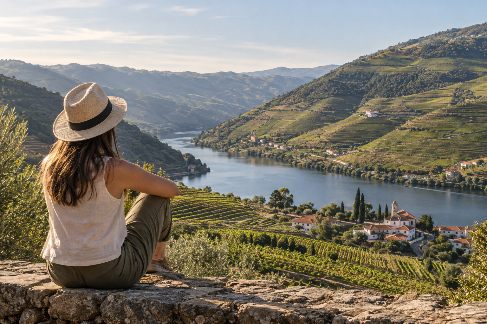

How Many Days in Portugal Do You Need
One of the first questions I ask when reviewing a Portugal trip is not which city the traveler wants to visit. It is how many usable days they actually have.
This matters because Portugal looks small on a map. Lisbon, Porto, Sintra, the Douro Valley, and the Algarve can all seem easy to combine. But once you add an overnight flight from the United States, hotel changes, train journeys, airport transfers, and day trips, a seven-day vacation can become much shorter than it looked when you booked it.
For most first-time visitors, 7 to 10 days is a useful amount of time for Portugal. Seven days works well for Lisbon, Sintra, and Porto. Around 10 days gives you enough room to add the Douro Valley or Algarve without making every day feel rushed. If you have 14 days, you can travel more slowly and add another region or smaller city.
Quick Answer: How Many Days Do You Need in Portugal?
Here is the simplest way to decide:
| Trip Length | What It Works Best For |
|---|---|
| 3 days | One city, usually Lisbon or Porto |
| 4 days | One main base plus a day trip |
| 5 days | Lisbon + Porto, or one city plus nearby areas |
| 7 days | Lisbon + Sintra + Porto |
| 10 days | Lisbon + Sintra + Porto + Douro Valley or Algarve |
| 14 days | Lisbon + Porto + Algarve + Douro + another regional stop |
| 3 weeks | Slower mainland trip with several regions |
If this is your first visit, I would not try to judge the trip by how many destinations you can fit.
A better question is:
How many places can I visit without losing too much time to transport?
That is the main idea behind this guide.
The Best Number of Days for a First Portugal Trip
For most first-time travelers, I would choose one of these three options:
7 Days
Best for:
Lisbon + Sintra + Porto
This is the cleanest option if you have one week and want to see Portugal's two main cities.
10 Days
Best for:
Lisbon + Sintra + Porto + Douro Valley or Algarve
Ten days gives you enough room to add another travel experience without turning the trip into a race.
14 Days
Best for:
Lisbon + Sintra + Porto + Douro Valley + Algarve + one additional stop
Two weeks lets you slow down, use several bases, and spend more time experiencing each area.
If you are still deciding your overall route, read How to Plan a Trip to Portugal: Step-by-Step Guide before booking accommodation. It explains how to choose your bases, airports, and transport in the right order.
Count Usable Days, Not Just Vacation Days
This is the part travelers often miss.
Suppose your vacation is listed as:
Saturday to the following Sunday
It may look like nine days.
But your real schedule could be:
Saturday: Fly from the United States
Sunday: Arrive in Portugal
Monday–Saturday: Main sightseeing days
Sunday: Fly home
You do not have nine full sightseeing days.
You have roughly six strong full days, plus arrival and departure time.
That difference can completely change the route.
Why Arrival Day Should Not Count as a Full Day
Traveling from the United States often means an overnight flight.
After landing, you may still need to:
- ✓Clear border control
- ✓Collect luggage
- ✓Reach the city
- ✓Find your hotel
- ✓Store bags or check in
- ✓Eat
- ✓Adjust to the time difference
You might still have several hours to explore.
But I would not build the entire itinerary around having a full sightseeing day.
Arrival day works better for:
- ✓Easy neighborhood walk
- ✓Casual meal
- ✓Nearby viewpoint
- ✓Simple sightseeing
- ✓Early night
Save important timed attractions for the next day.
Transfer Days Are Not Full Days Either
This is another easy mistake.
Imagine your itinerary says:
Day 4: Lisbon to Porto
You might see that as both a Lisbon and Porto sightseeing day.
In reality, the day includes more than the train itself.
You also need:
- ✓Hotel checkout
- ✓Travel to the station
- ✓Waiting time
- ✓Train journey
- ✓Leaving the station
- ✓Travel to your Porto hotel
- ✓Check-in
- ✓Luggage
You can still explore Porto afterward.
But you should not treat it like a full day.
When I calculate a Portugal route, I treat long city-to-city movements as partial days.
This gives a much more realistic picture.
How Many Nights vs How Many Days?
Travel planning becomes easier when you think in nights.
For example:
3 nights in Lisbon usually gives you about two full days plus parts of your arrival and departure days.
4 nights in Lisbon can give you three full days.
That extra night may be what allows you to add Sintra without cutting Lisbon too short.
Simple Nights Rule
| Nights in One Place | Approximate Useful Time |
|---|---|
| 1 night | Very limited |
| 2 nights | About 1 full day |
| 3 nights | About 2 full days |
| 4 nights | About 3 full days |
| 5 nights | About 4 full days |
This is not exact.
Arrival and departure times change the result.
But it is a better planning method than saying:
I have seven days, so I can visit seven places.
Is 3 Days Enough for Portugal?
Three days is enough for one part of Portugal, not for the country as a whole.
For a first trip, choose:
Lisbon
or:
Porto
Do not try to combine Lisbon, Porto, and the Algarve in three days.
3 Days in Lisbon
A simple structure could be:
Day 1: Central Lisbon
Day 2: More Lisbon sightseeing
Day 3: Sintra or another Lisbon day
If Sintra is a major priority, three days can work.
But you will not have much spare time.
3 Days in Porto
Three days can give you:
Day 1: Central Porto
Day 2: Porto sightseeing
Day 3: Porto or Douro Valley
Again, adding the Douro Valley means giving up part of your Porto time.
Who Should Choose a 3-Day Portugal Trip?
Three days makes sense if:
- ✓Portugal is part of a longer European trip
- ✓You are visiting for a city break
- ✓You are returning later
- ✓You only care about one city
- ✓Your flight schedule gives you three real days
If Portugal is your main international vacation, I would give it more time.
Is 4 Days Enough for Portugal?
Four days works best with one main base.
Lisbon is the easiest option for many first-time visitors because you can combine the city with Sintra without changing hotels.
A simple four-day plan could look like:
Day 1: Lisbon
Day 2: Lisbon
Day 3: Sintra
Day 4: Lisbon
You could build a similar trip around Porto and use one day for the Douro Valley.
What I would avoid is:
Lisbon → Porto → Algarve
Four days does not give those three areas enough time.
Is 5 Days Enough for Portugal?
Yes, but you need to stay focused.
Five days is where combining Lisbon and Porto starts to become possible.
A simple route might be:
Lisbon: 3 nights
then:
Porto: 2 nights
Or reverse the direction.
Should You Add Sintra to a 5-Day Trip?
You can.
But understand the tradeoff.
If you use one Lisbon day for Sintra, you have less time in Lisbon itself.
That can still work if Sintra matters more to you than another Lisbon sightseeing day.
Should You Add the Algarve in 5 Days?
For most first-time visitors, I would not.
The Algarve adds another long transfer and another base.
Five days is already short for Lisbon and Porto.
Adding southern Portugal can turn a short vacation into a series of transport days.
Best 5-Day Trip Styles
| Traveler | Better Use of 5 Days |
|---|---|
| First-time city traveler | Lisbon + Porto |
| Slower traveler | Lisbon + Sintra |
| Northern Portugal focus | Porto + Douro Valley |
| Beach traveler | Lisbon + Algarve |
| No-car traveler | Lisbon + Porto |
If you want the bigger country overview before deciding, Portugal Travel Guide for First-Time Visitors explains how Lisbon, Porto, Sintra, the Douro Valley, and the Algarve fit together.
Is 6 Days Enough for Portugal?
Six days gives you a little more breathing room than five, but I would still keep the route simple.
A good structure could be:
Lisbon: 3 nights
Porto: 3 nights
That gives each city roughly two useful days after accounting for travel.
From here, you need to choose whether Sintra or the Douro Valley deserves one of those days.
Trying to do both may still make the trip busy.
Is 7 Days Enough for Portugal?

Yes.
Seven days is one of the best lengths for a focused first Portugal trip.
You have enough time to experience Lisbon and Porto and add at least one strong day trip without changing hotels every night.
A Good 7-Day Portugal Structure
A simple version is:
Lisbon: 4 nights
Use one day for Sintra.
Then:
Porto: 3 nights
Explore Porto properly.
This gives you:
- ✓Lisbon
- ✓Sintra
- ✓Porto
- ✓Two main hotel bases
- ✓One major intercity transfer
That is a much cleaner first trip than trying to cover the entire country.
Can You Add the Douro Valley in 7 Days?
Yes, but it creates a tradeoff.
You can use one Porto day for the Douro Valley.
That may work well if wine and countryside scenery are high priorities.
But now your Porto sightseeing time becomes shorter.
Ask yourself:
Would I rather have another full day in Porto or use that day for the Douro Valley?
There is no universal correct answer.
Your interests should decide.
Can You Add the Algarve in 7 Days?
Technically, yes.
But for most first-time travelers, I would not combine:
Lisbon + Sintra + Porto + Douro Valley + Algarve
inside one week.
That route looks impressive.
It also means a lot of moving.
If the Algarve is a priority, change the route rather than simply adding it.
For example:
Lisbon + Sintra + Algarve
can make more sense for a traveler who values beaches more than Porto.
The 7-Day Decision
Choose between these broad styles:
| 7-Day Priority | Route |
|---|---|
| Classic first trip | Lisbon + Sintra + Porto |
| City + wine | Lisbon + Porto + Douro Valley |
| City + coast | Lisbon + Algarve |
| Slower trip | Lisbon + Sintra + extra Lisbon time |
| Northern focus | Porto + Douro + nearby northern areas |
The best seven-day itinerary is not the one containing the most famous destinations.
It is the one with the fewest unnecessary transfers.
When Should You Stay Longer Than 7 Days?
Consider adding more days if:
- ✓You want both Porto and the Algarve
- ✓You want several day trips
- ✓You dislike fast travel
- ✓You are traveling with children
- ✓Mobility affects walking pace
- ✓You want beach rest days
- ✓You want to drive through smaller towns
- ✓Food and wine are major parts of the trip
- ✓You prefer three or four nights per base
If several of these apply to you, 10 days will probably fit better than seven.
Is 8 Days Enough for Portugal?
Eight days gives you more room than a standard one-week trip, but the extra day should improve the route rather than add another hotel.
A strong first-time structure is:
Lisbon: 4 nightsPorto: 4 nights
Use one Lisbon day for Sintra. From Porto, you can decide whether the Douro Valley deserves a full day.
This gives you two stable bases and enough time to explore both cities.
A Good 8-Day Route
Day 1: Arrive in Lisbon
Day 2: Lisbon
Day 3: Lisbon
Day 4: Sintra
Day 5: Travel to Porto
Day 6: Porto
Day 7: Porto or Douro Valley
Day 8: Porto / departure depending on flight
If your flight schedule gives you eight full sightseeing days, you can add more. If arrival and departure use part of that time, keep the route simple.
For the detailed daily structure, this route will later connect naturally to Portugal 7-Day Itinerary for First-Time Visitors and the longer itinerary pages.
Is 9 Days Enough for Portugal?
Nine days is an interesting middle point.
You have enough time to move beyond the basic Lisbon–Porto route, but not enough time to add every major region comfortably.
I would use the ninth day in one of three ways.
Option 1: Add the Douro Valley
Use:
Lisbon + Sintra + Porto + Douro Valley
This works well for travelers interested in cities, food, wine, and countryside scenery.
Option 2: Stay Longer in Lisbon or Porto
This is the better choice if you prefer slower travel.
An extra city day can mean:
- ✓Less pressure
- ✓More neighborhood time
- ✓Better restaurant flexibility
- ✓Time for museums
- ✓A slower morning
- ✓Weather backup
Option 3: Begin Moving Toward the Algarve
This can work if beaches are a major priority, but nine days starts becoming busy once you include Lisbon, Porto, and the Algarve.
If you add southern Portugal, remove something else rather than squeezing everything together.
Is 10 Days Enough for Portugal?

Yes.
For many first-time travelers, 10 days is one of the best trip lengths for Portugal.
It is long enough to experience more than the two main cities but short enough that you still need to make clear choices.
You can build the trip around:
Lisbon + Sintra + Porto + Douro Valley
or:
Lisbon + Sintra + Porto + Algarve
A faster traveler may include both the Douro Valley and Algarve, but that creates more movement.
Option 1: Cities + Douro Valley
A balanced structure could be:
Lisbon: 4 nightsPorto: 4 nightsDouro Valley: day trip or 1–2 nights
This route works well for travelers who prefer cities, history, food, and wine over beach time.
Option 2: Cities + Algarve
Another option is:
Lisbon: 4 nightsPorto: 3 nightsAlgarve: 3 nights
Use one Lisbon day for Sintra.
This gives you a mix of:
- ✓City sightseeing
- ✓Historic areas
- ✓Coastal scenery
- ✓Beach time
Option 3: Lisbon + Porto at a Slower Pace
You do not have to add another region just because you have 10 days.
A slower trip could include:
Lisbon + Sintra + Porto + Douro Valley
with longer stays in Lisbon and Porto.
For a full day-by-day version, use Portugal 10-Day Itinerary for First-Time Visitors as the natural internal link from this section.
Should You Visit the Algarve on a 10-Day Trip?
Yes, if coastal scenery and beaches are a major reason you chose Portugal.
Ten days gives you enough time to give the Algarve several nights instead of treating it as a quick stop.
I would avoid going south for only one night.
The transport time and hotel change reduce the value of such a short stay.
For most travelers, the Algarve becomes much more worthwhile when you can give it at least 2–3 nights.
If the region is a major part of your plans, Algarve Travel Guide for First-Time Visitors should become the deeper internal link.
Is 11 Days Enough for Portugal?
Eleven days gives you useful flexibility without changing the basic structure of a 10-day trip.
Use the extra day to improve one part of the trip.
Good options include:
- ✓Add another night in Lisbon
- ✓Add another night in Porto
- ✓Stay overnight in the Douro Valley
- ✓Add another Algarve night
- ✓Add one smaller city between major bases
What I would not do is add two or three new destinations simply because one extra day exists.
The value of an 11-day trip is that you can reduce pressure.
Is 12 Days Enough for Portugal?
Twelve days gives you enough time to build a broader mainland Portugal route.
A first-time itinerary could include:
Lisbon + Sintra + Porto + Douro Valley + Algarve
without making every destination a one-night stop.
You can also consider one smaller city such as Coimbra or Évora.
Example 12-Day Structure
| Stop | Suggested Time |
|---|---|
| Lisbon | 4 nights |
| Porto | 3 nights |
| Douro Valley | Day trip or 1 night |
| Algarve | 3–4 nights |
| Optional smaller stop | 1 night if route supports it |
The exact split depends on your interests.
If you prefer beaches, move an extra night to the Algarve.
If you prefer cities and wine, give more time to Porto and the Douro.
Is 14 Days Enough for Portugal?
Yes.
Two weeks is an excellent amount of time for a first mainland Portugal trip if you want several regions without rushing.
Fourteen days allows you to combine major cities, a day trip, wine country, and the coast while still giving most bases useful time.
A strong route could include:
Lisbon → Sintra → Porto → Douro Valley → Central Portugal or Alentejo → Algarve
You do not have to include every part of that route.
The benefit of two weeks is choice.
A Balanced 14-Day Structure
| Destination | Suggested Time |
|---|---|
| Lisbon | 4 nights |
| Sintra | Day trip from Lisbon |
| Porto | 3 nights |
| Douro Valley | 1 night or day trip |
| Coimbra or Évora | 1–2 nights |
| Algarve | 3–4 nights |
This is much more comfortable than trying to fit the same route into seven days.
For the detailed route, this section should link to Portugal 14-Day Itinerary for First-Time Visitors.
Should You Add Coimbra on a Two-Week Trip?
You can.
Coimbra works especially well if your route takes you between Lisbon and Porto.
It gives you a smaller-city experience between Portugal's two major city stops.
However, I would add Coimbra because you want to experience it, not because it sits between two destinations.
If your main interests are beaches, wine, or slower stays, that night may be more valuable elsewhere.
Should You Add Évora on a Two-Week Trip?
Évora can fit well into a longer first visit, especially if you want a historic city outside Lisbon and Porto.
It also introduces a different part of Portugal.
But adding both Coimbra and Évora to an already full itinerary may still create too many hotel changes.
Choose the smaller stop that best fits your route.
What About 3 Weeks in Portugal?
Three weeks changes the type of trip.
You no longer need to focus only on the major first-time destinations.
You can travel more slowly and include several smaller areas.
A three-week mainland trip may include:
- ✓Lisbon
- ✓Sintra
- ✓Évora
- ✓Coimbra
- ✓Porto
- ✓Douro Valley
- ✓Algarve
- ✓Smaller towns
- ✓Coastal areas
- ✓Rest days
The main benefit is not seeing more places.
It is having more time in each place.
Should You Add Madeira or the Azores?
Madeira and the Azores are part of Portugal, but they require a different planning approach from a mainland route.
Adding either one normally means another flight.
With three weeks, combining the mainland with an island region becomes easier.
With seven or ten days, I would usually keep the trip focused unless the islands are one of your main priorities.
How Many Days Should You Spend in Lisbon?
For most first-time visitors, 3 to 4 nights in Lisbon works well.
That usually gives you:
- ✓Two or three useful Lisbon days
- ✓Time for different neighborhoods
- ✓Space for a Sintra day trip if staying four nights
2 Nights in Lisbon
Two nights gives you around one full sightseeing day.
It works for a short stop but feels limited for a first visit.
3 Nights in Lisbon
Three nights gives you a better introduction to the city.
You can see the main areas without trying to fit Sintra into an already short stay.
4 Nights in Lisbon
Four nights is my preferred starting point when Sintra is included.
You can spend several days in Lisbon and still use one full day outside the city.
5 Nights in Lisbon
Five nights works well for travelers who:
- ✓Prefer slower sightseeing
- ✓Want several museums
- ✓Enjoy food and neighborhoods
- ✓Want another day trip
- ✓Do not want to move hotels often
For deeper city planning, use Lisbon Travel Guide for First-Time Visitors.
How Many Days Should You Spend in Sintra?
For most first-time visitors, one full day is enough to experience the main idea of Sintra.
That does not mean you can see everything.
Trying to visit too many palaces and estates in one day can make the trip stressful.
Choose your priority attractions.
Should You Stay Overnight in Sintra?
An overnight stay makes sense if:
- ✓Sintra is a major priority
- ✓You want a slower pace
- ✓You want to see more than the main day-trip highlights
- ✓You have a longer Portugal itinerary
For a standard first-time route, a day trip from Lisbon is simpler.
The detailed logistics belong in Sintra Day Trip from Lisbon: Complete First-Time Guide.
How Many Days Should You Spend in Porto?
For most first-time travelers, 2 to 3 full days in Porto is a useful range.
2 Nights in Porto
Two nights gives you roughly one full sightseeing day.
It can work, but it feels short.
3 Nights in Porto
Three nights gives you more time for:
- ✓Historic center
- ✓Ribeira
- ✓Riverfront
- ✓Food
- ✓Viewpoints
- ✓Gaia
This is a better minimum for many first-time visitors.
4 Nights in Porto
Four nights becomes useful when you want a Douro Valley day trip.
Instead of sacrificing most of your Porto time, you can spend one full day outside the city.
For a city-focused plan, link this section to Porto Travel Guide for First-Time Visitors.
How Many Days Do You Need for the Douro Valley?
For most first-time visitors, the Douro Valley needs either:
One full day
or:
One overnight stay
One-Day Visit
A day trip is best if:
- ✓Your overall trip is short
- ✓Porto is your main base
- ✓You want a taste of the scenery and wine region
One or Two Nights
Stay overnight if:
- ✓Wine is a major interest
- ✓You prefer slower travel
- ✓You want more time away from cities
- ✓You want a less rushed experience
On a seven-day Portugal trip, I would usually use Porto as the base.
On a 10- or 14-day trip, an overnight stay becomes easier.
For the deeper comparison, use Douro Valley Guide: Day Trip or Overnight from Porto.
How Many Days Should You Spend in the Algarve?
For a first trip, I would give the Algarve at least 3 nights when possible.
Two nights can work, but it gives you limited time after arrival and before departure.
2 Nights in the Algarve
Best for:
A quick coastal introduction.
You may have only one full day.
3 Nights in the Algarve
This is a much better starting point.
You can have:
- ✓Beach time
- ✓Coastal sightseeing
- ✓One active day
- ✓A slower evening
4–5 Nights in the Algarve
This works well for travelers who want the coast to be a major part of the vacation.
You have time for multiple beaches or towns without changing hotels every day.
6+ Nights in the Algarve
This suits:
- ✓Beach-focused trips
- ✓Families
- ✓Slower travelers
- ✓Coastal road trips
- ✓Longer summer vacations
For choosing your base and planning the region, link to Algarve Travel Guide for First-Time Visitors.
How Many Days Do You Need in Portugal Without a Car?
You can build an excellent Portugal trip without renting a car.
For a first-time no-car route, 7 to 10 days works especially well.
A simple route is:
Lisbon → Sintra → Porto
Ten days can give you more room to add the Douro Valley or another rail-connected stop.
If your trip relies mainly on public transport, avoid adding too many rural destinations.
The transport comparison should connect naturally to How to Get Around Portugal: Trains, Buses, Cars and Flights.
How Many Days Do You Need for a Portugal Road Trip?
For a road trip, I would prefer 10 to 14 days.
The reason is simple.
A road trip becomes more useful when you have time to stop between major cities.
If you have only five days, driving long distances can reduce the time you spend exploring.
With two weeks, a car gives you more freedom to add:
- ✓Smaller towns
- ✓Rural areas
- ✓Coastal stops
- ✓Alentejo
- ✓Algarve locations
- ✓Countryside stays
For driving-specific planning, use Driving in Portugal: Road Rules, Tolls, Parking and Safety and Renting a Car in Portugal: Costs, Insurance and When You Need One.
Best Portugal Trip Length by Travel Style
Your interests can change the ideal number of days.
| Travel Style | Suggested Trip Length |
|---|---|
| Quick city break | 3–4 days |
| Lisbon + Porto | 5–7 days |
| Classic first trip | 7–10 days |
| Cities + wine | 8–10 days |
| Cities + Algarve | 10–12 days |
| First-time road trip | 10–14 days |
| Relaxed first trip | 10–14 days |
| Family trip | 10–14 days |
| Beach-focused trip | 7–14 days |
| Broad mainland trip | 14–21 days |
These ranges are more useful than one fixed answer because travelers use their days differently.
How Travel Pace Changes the Answer
Two travelers can have the same 10-day vacation and need very different itineraries.
Fast-Paced Traveler
You may enjoy:
- ✓More cities
- ✓Early starts
- ✓Frequent trains
- ✓Several hotel changes
A 10-day trip can cover more ground.
Moderate-Paced Traveler
You may prefer:
- ✓3–4 nights per major base
- ✓One day trip at a time
- ✓Some free evenings
Seven to ten days works well for a focused route.
Slow Traveler
You may prefer:
- ✓Longer stays
- ✓Few hotel changes
- ✓Free afternoons
- ✓Neighborhood exploration
- ✓Rest days
For the same destination list, you may need 12 to 14 days instead of seven.
How Many Hotel Bases Should You Use?
This is a useful way to control your itinerary.
| Trip Length | Good Number of Main Bases |
|---|---|
| 3–4 days | 1 |
| 5–7 days | 1–2 |
| 8–10 days | 2–3 |
| 11–14 days | 3–4 |
| 3 weeks | 4–6 |
A day trip does not need to become another hotel base.
Sintra can stay attached to Lisbon.
The Douro Valley can stay attached to Porto if you are short on time.
This simple rule can prevent unnecessary check-ins.
When Should You Add Another Destination?
Before adding a stop, ask three questions:
Do I Have at Least One Useful Day There?
If not, the stop may be too short.
Does It Add Something Different?
Adding the Algarve gives you a different experience from Lisbon.
Adding another city simply because it is nearby may provide less value.
What Am I Removing to Make Space?
Every new destination costs time somewhere else.
If adding a stop means cutting Lisbon from three days to one, decide which experience matters more.
That tradeoff is the real answer to the question of how many days you need in Portugal.
Quick Portugal Time Allocation Table
For a classic first trip, use these ranges as a starting point:
| Destination | Useful First-Time Range |
|---|---|
| Lisbon | 3–4 nights |
| Sintra | 1 day |
| Porto | 3–4 nights |
| Douro Valley | 1 day or 1–2 nights |
| Algarve | 3–5 nights |
| Coimbra | 1–2 nights |
| Évora | 1–2 nights |
You do not need to combine all of them.
Choose enough destinations to fit your available time while keeping travel days under control.
Does the Best Trip Length Change by Season?
Yes. The number of days you need can change slightly based on the season and the type of trip you want.
Portugal's weather varies by region. Northern Portugal is generally cooler, while southern areas are warmer. Summer is usually hot and dry, while winter conditions are cooler, especially in the north.
Your trip length should reflect what you plan to do, not just the month on the calendar.
Spring: 7–14 Days Works Well
Spring is useful for trips that combine cities and regional sightseeing.
You can comfortably plan:
- ✓Lisbon
- ✓Sintra
- ✓Porto
- ✓Douro Valley
- ✓Algarve
- ✓Smaller cities on longer trips
If you have one week, keep the route focused.
With 10 to 14 days, you can add more regional stops without needing to rush.
For month-by-month planning, link this section to Best Time to Visit Portugal: Weather, Crowds and Costs.
Summer: Add Time for the Coast
Summer trips often include the Algarve or another coastal stay.
If beach time is a major goal, protect at least 3–5 nights for the Algarve instead of trying to fit it between city stops.
A 10- to 14-day trip works better if you want:
Lisbon + Porto + Algarve
and still want time to relax.
Fall: 7–14 Days Gives You Plenty of Choice
Fall can work for city trips, wine-focused travel, and mixed routes.
A one-week trip can stay with Lisbon and Porto.
Ten days gives more room for the Douro Valley.
Two weeks allows you to combine cities, wine areas, and southern Portugal at a slower pace.
Winter: Fewer Bases Can Work Better
Winter can suit a shorter city-focused trip.
You may prefer:
Lisbon + Porto
rather than building a route around several beach destinations.
That does not mean the Algarve must be skipped. It simply means your trip priorities may be different from a summer vacation.
Your Flights Can Change How Many Days You Actually Have
Two travelers can both book a 10-day vacation and still have different amounts of usable time.
Flight schedules matter.
Example A: Good Arrival and Departure Times
You arrive in Lisbon in the morning.
Your return flight leaves Porto late in the day.
You can use part of both travel days.
Example B: Less Usable Time
You arrive late in the evening.
Your return flight leaves early in the morning.
You effectively lose most of both days.
The number printed on your booking confirmation therefore does not tell the whole story.
Count Full Days Before Choosing Your Route
Before deciding whether you have enough time for the Algarve, Douro Valley, or another city, calculate:
Total nights
minus:
Arrival limitations
minus:
Departure limitations
minus:
Major transfer days
This gives you a much better picture of the trip.
Example
You have:
10 nights in Portugal
But your schedule includes:
- ✓Late arrival
- ✓Lisbon-to-Porto transfer
- ✓Porto-to-Algarve transfer
- ✓Early departure
You may have only seven or eight strong sightseeing days.
That is still enough for a good trip.
But it is different from having 10 complete days.
Should You Add a Day Because of Jet Lag?
Travelers arriving from the United States may need time to adjust after an overnight flight.
You do not always need an extra vacation day just for jet lag.
However, avoid making arrival day one of the busiest days of the itinerary.
A lighter first day gives you room for:
- ✓Hotel check-in
- ✓Food
- ✓Short walk
- ✓Nearby sightseeing
- ✓Rest
If you have a choice between seven rushed days and eight days with a lighter arrival, the extra day can improve the whole trip.
5 vs 7 vs 10 vs 14 Days in Portugal
This is the easiest way to compare the main trip lengths.
| Trip Length | Best For | Main Route Idea | Pace |
|---|---|---|---|
| 5 days | Short first visit | Lisbon + Porto | Fast |
| 7 days | Classic first trip | Lisbon + Sintra + Porto | Moderate |
| 10 days | Broader first trip | Lisbon + Sintra + Porto + Douro or Algarve | Moderate |
| 14 days | Wider mainland trip | Lisbon + Porto + Douro + Algarve + optional regional stop | Relaxed to moderate |
Each length has a different purpose.
Do not try to turn the five-day route into the 14-day route.
Who Should Choose 5 Days?
Choose five days if:
- ✓Your vacation time is limited
- ✓Portugal is part of a longer Europe trip
- ✓Lisbon and Porto are your main priorities
- ✓You are comfortable with a faster pace
The biggest rule is to keep the destination count low.
For the full daily plan, use Portugal 5-Day Itinerary for First-Time Visitors.
Who Should Choose 7 Days?
Choose seven days if:
- ✓This is your first Portugal trip
- ✓Lisbon and Porto are both priorities
- ✓You want to visit Sintra
- ✓You prefer only two hotel bases
- ✓You are comfortable skipping the Algarve
For many first-time visitors, this is the simplest balance between time and variety.
The detailed version belongs in Portugal 7-Day Itinerary for First-Time Visitors.
Who Should Choose 10 Days?
Choose 10 days if:
- ✓You want more than Lisbon and Porto
- ✓You want the Douro Valley or Algarve
- ✓You prefer a little more breathing room
- ✓Portugal is the main destination of the vacation
Ten days gives you choices instead of forcing every famous stop into the schedule.
Use Portugal 10-Day Itinerary for First-Time Visitors for the full route.
Who Should Choose 14 Days?
Choose two weeks if:
- ✓You want cities and beaches
- ✓You want wine country
- ✓You dislike frequent rushing
- ✓You want another smaller city
- ✓You want several longer stays
- ✓You are planning a road trip
Fourteen days gives you enough time to experience different sides of mainland Portugal without relying on one-night stops.
The full structure belongs in Portugal 14-Day Itinerary for First-Time Visitors.
How to Choose Your Exact Number of Days
If you can control the length of your vacation, use this simple process.
Step 1: Choose Your Must-Visit Places
Write down only the places you care about most.
For example:
LisbonPortoAlgarve
Do not add optional places yet.
Step 2: Give Each Main Base Enough Nights
A useful starting point is:
Lisbon: 3–4 nightsPorto: 3–4 nightsAlgarve: 3–5 nights
Then decide whether Sintra and the Douro Valley will be day trips.
Step 3: Add Transfer Time
Do not place two full sightseeing days on either side of a long transfer and assume nothing is lost.
Allow for the move itself.
Step 4: Add Arrival and Departure
Now include your flight schedule.
Step 5: Add Optional Stops Only If Time Remains
This is where Coimbra, Évora, or an overnight Douro stay can enter the plan.
If no time remains, keep them for another trip.
For the full planning sequence, link to How to Plan a Trip to Portugal: Step-by-Step Guide.
A Simple Formula for Portugal Trip Length
You can use this as a rough planning formula:
Main city nights + regional nights + transfer time + arrival/departure = total trip length
For example:
Lisbon: 4 nightsPorto: 3 nightsAlgarve: 3 nights
That already gives you:
10 nights
before you consider adding another overnight destination.
This is why a route that appears small on a map can still need 10 to 14 days.
How Many Days Do Families Need in Portugal?
Families may benefit from a slightly slower route.
Young children can make:
- ✓Hotel changes slower
- ✓Train transfers harder
- ✓Long sightseeing days tiring
- ✓Late dinners more difficult
For a family visiting Lisbon and Porto, I would lean closer to 7–10 days rather than trying to cover both in four or five days.
If the Algarve is included, 10–14 days gives you more room for rest.
You do not need to fill every day with sightseeing.
How Many Days Do Couples Need?
Couples can use almost any of the main trip lengths.
A seven-day trip works well for:
Lisbon + Sintra + Porto
Ten days gives more room for:
- ✓Douro Valley
- ✓Algarve
- ✓Food experiences
- ✓Slower evenings
Two weeks suits couples who want a mix of sightseeing and slower regional stays.
How Many Days Do Solo Travelers Need?
Solo travelers may be able to move faster because they do not need to coordinate a group.
That does not mean you need to.
For a first solo trip, 7–10 days gives enough time to learn how local transport works and settle into each destination.
A simple Lisbon–Porto route also reduces the number of transfers you need to manage alone.
How Many Days Do Older or Slower Travelers Need?
If hills, long walks, or frequent hotel changes may be tiring, add more time rather than more destinations.
Lisbon and Porto both include steep areas.
A slower itinerary can mean:
- ✓Shorter sightseeing days
- ✓More taxi or public transport use
- ✓Longer stays at each hotel
- ✓Fewer early starts
A route that takes a fast traveler seven days may feel better across 9 or 10 days at a slower pace.
How Many Days Do You Need If Portugal Is Part of a Europe Trip?
If Portugal is one part of a larger European vacation, do not try to see the whole country.
3–4 Days
Choose Lisbon or Porto.
5 Days
Choose Lisbon + Porto or Lisbon + Sintra.
7 Days
You can build a strong Lisbon + Sintra + Porto trip.
If you have fewer than five days, I would rather experience one area properly than spend much of the visit moving between cities.
Common Trip-Length Mistakes
Adding the Algarve Because You Have One Spare Night
One night usually gives you very little useful coastal time.
Add the Algarve when you can give it several nights.
Counting Sintra as a Two-Hour Stop
Sintra works better as a proper day trip.
Do not build a packed Lisbon day around a very short visit.
Giving Porto Only One Night
You may technically see part of Porto, but a one-night stay gives you little time after arrival and before departure.
Forgetting Transfer Days
A train may take only a few hours.
The complete hotel-to-hotel move takes longer.
Using One-Night Stops to See More
More hotel locations do not always mean more useful sightseeing.
Trying to Use the Same Itinerary for Every Traveler
A family, beach traveler, fast solo traveler, and wine-focused couple may need very different schedules.
Adding Destinations Instead of Improving the Trip
If you receive one extra vacation day, you do not automatically need one extra city.
Adding the night to Lisbon, Porto, or the Algarve may give you more value.
Final Trip-Length Decision Table
If you are still unsure, use this:
| Your Goal | Time I Would Start With |
|---|---|
| See Lisbon | 3–4 days |
| Lisbon + Sintra | 4–5 days |
| Lisbon + Porto | 5–7 days |
| Lisbon + Sintra + Porto | 7 days |
| Add Douro Valley | 8–10 days |
| Add Algarve | 10–12 days |
| Cities + Douro + Algarve | 12–14 days |
| Add smaller mainland stops | 14+ days |
| Slow broad Portugal trip | 2–3 weeks |
If this is your first visit and you still cannot decide, 7–10 days remains the strongest general starting range.
- ↗
- ↗
- ↗
Frequently Asked Questions
How many days are enough for Portugal?
Seven to ten days is enough for a strong first trip. Seven days works well for Lisbon, Sintra, and Porto. Ten days gives you room to add the Douro Valley or Algarve.
Is 5 days too short for Portugal?
Five days is short but useful if you keep the route focused. Lisbon and Porto can fit, or you can stay around Lisbon and add Sintra.
Is 7 days enough to visit Portugal?
Yes. One week is enough for a classic first route built around Lisbon, Sintra, and Porto. Avoid trying to cover the entire mainland.
Is 10 days enough for Lisbon, Porto, and Algarve?
Yes. Ten days can work for all three, but you need a simple route and realistic travel days. Give the Algarve several nights rather than treating it as a quick stop.
Is 2 weeks too long in Portugal?
No. Two weeks gives you time for Lisbon, Porto, the Douro Valley, Algarve, and another regional stop without changing hotels every day.
How many days should I spend in Lisbon and Porto?
For many first-time visitors, plan about 3–4 nights in Lisbon and 3–4 nights in Porto. Give Lisbon an extra night if you want to use one full day for Sintra.
Should I spend more days in Lisbon or Porto?
It depends on your interests. Lisbon often receives an extra night because it is larger and works well as a base for Sintra. Porto may need an extra night if you plan a Douro Valley day trip.
How many days do I need in Portugal without a car?
Seven to ten days works very well for a no-car first trip focused on Lisbon, Sintra, Porto, and other rail-connected destinations. For transport choices, use How to Get Around Portugal: Trains, Buses, Cars and Flights.
Conclusion
When I compare first-time Portugal routes, 7 to 10 days is the range I find easiest to work with. Seven days gives Lisbon, Sintra, and Porto enough room to make sense. Ten days creates space for the Douro Valley or Algarve. Two weeks is better when you want several regions and a slower pace.
The number of places on your itinerary matters less than the amount of usable time you have in each one. I would rather plan three strong bases with enough time to explore than six stops built around constant check-outs and transfers. If your route starts looking crowded, remove a stop before adding another day of rushing.